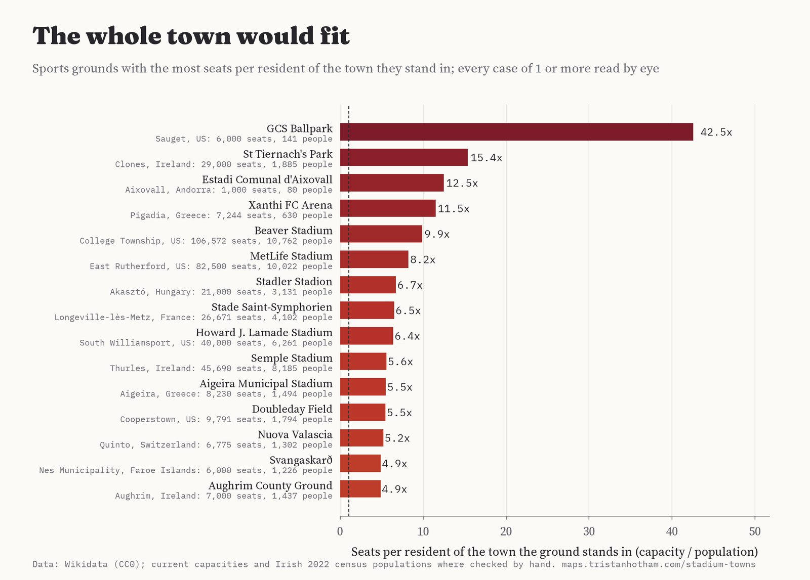
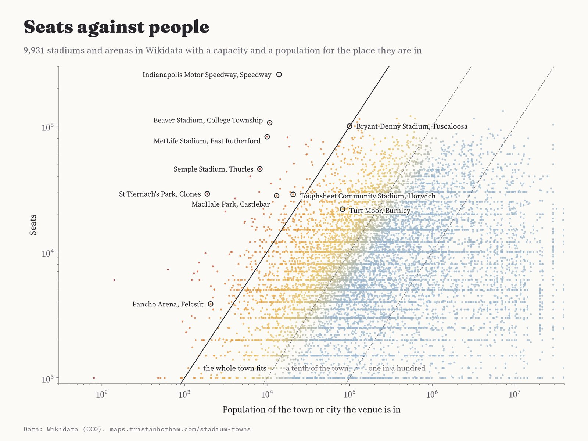
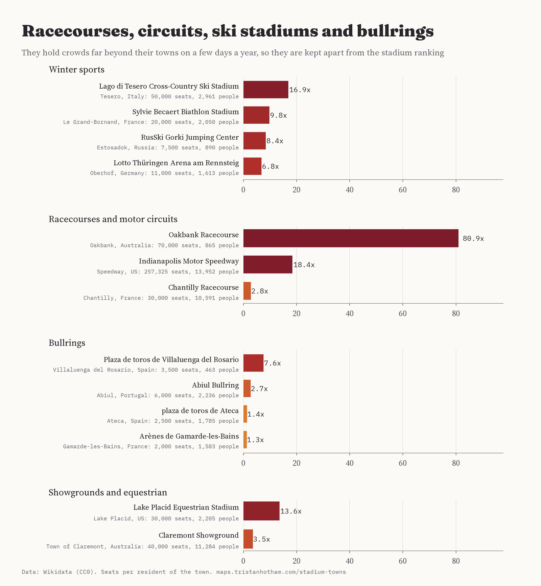
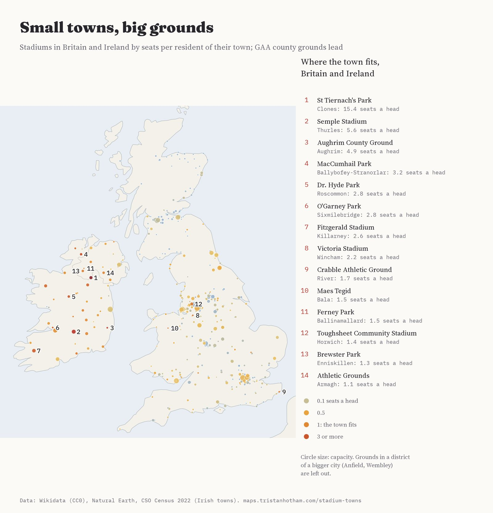
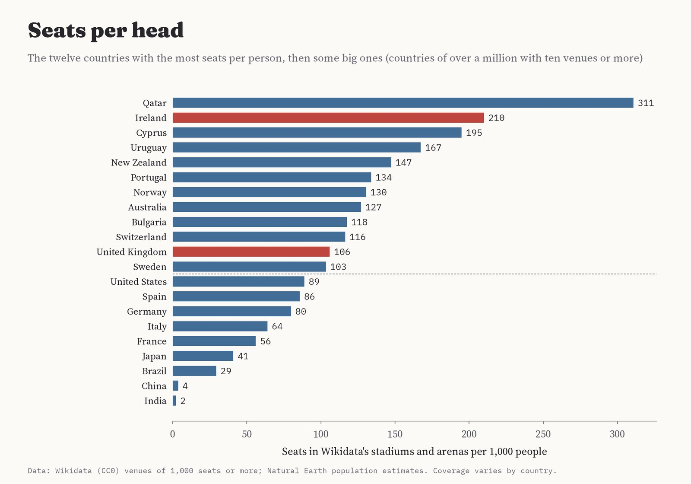
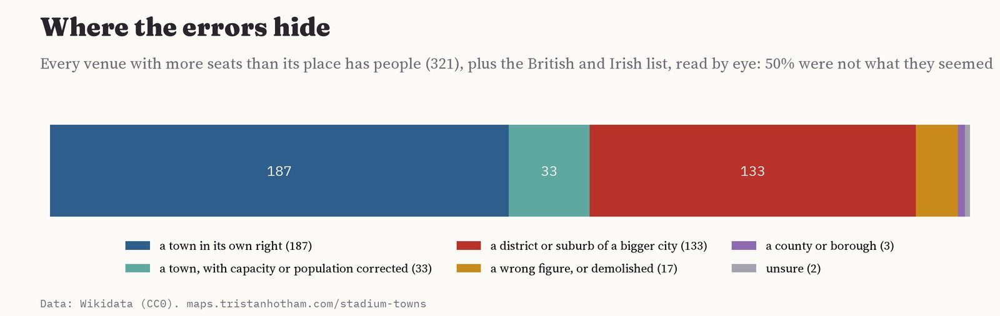

11,658 sports venues of 1,000 seats or more from Wikidata, worldwide. Circle size: seats. Colour: seats per resident of the town it stands in; red venues could hold the whole town. Tap one.
Penn State's Beaver Stadium holds 106,572 people. The township it stands in has 10,762. On a home game Saturday the whole place could sit in the stands 9.9 times over. I went looking for every stadium in the world that is bigger than its town, from American college towns to the Irish county grounds and a ballpark in an Illinois village of 141 people.
I took 11,658 sports venues of 1,000 seats or more from Wikidata and divided each one's capacity by the population of the place it stands in. At first 321 came out bigger than their town. Most of those were not: Wikidata often places a stadium in a city district or a suburb, so Camp Nou looked bigger than its neighbourhood and Anfield bigger than Anfield. After reading every case by eye, 190 venues in 48 countries really are bigger than the town they are in, and 73 could seat it twice.
The record is GCS Ballpark, a minor league baseball park in Sauget, Illinois, an industrial village of 141 people beside St Louis: 6,000 seats, 43 for every resident. Second is an Irish county ground: St Tiernach's Park in Clones holds 29,000 for Gaelic football, in a town of 1,885. Then come a football ground for 1,000 in the Andorran hamlet of Aixovall, home of 80 people, and Xanthi's stadium in the village of Pigadia, unused since the club left it in 2022. MetLife Stadium, home of the New York Giants and Jets, holds 82,500 in East Rutherford, New Jersey, a borough of 10,022, and Beaver Stadium is the biggest of them all.

The grounds with the most seats per resident of their town, after reading every case by eye.
American college football gives the most famous cases. Clemson's Memorial Stadium holds 4.6 times the population of Clemson, Notre Dame Stadium 2.3 times its township, and Stanford Stadium 2.4 times Stanford. Even Bryant-Denny Stadium at the University of Alabama, with 100,077 seats, would just about hold everyone in Tuscaloosa (99,600). In European football the leaders are smaller grounds in small places: Aixovall, Xanthi, the abandoned Stadler Stadion in the Hungarian village of Akasztó, FC Metz's Saint-Symphorien, which stands in the little commune of Longeville-lès-Metz, and the Pancho Arena in Felcsút, home of the Puskás Academy (1.9 times the village).

Every stadium and arena with a capacity and a population: above the solid line the whole town fits.
| Ground | Town | Seats | People | Seats a head |
|---|---|---|---|---|
| GCS Ballpark | Sauget, US | 6,000 | 141 | 42.5 |
| St Tiernach's Park | Clones, Ireland | 29,000 | 1,885 | 15.4 |
| Estadi Comunal d'Aixovall | Aixovall, Andorra | 1,000 | 80 | 12.5 |
| Xanthi FC Arena | Pigadia, Greece | 7,244 | 630 | 11.5 |
| Beaver Stadium | College Township, US | 106,572 | 10,762 | 9.9 |
| MetLife Stadium | East Rutherford, US | 82,500 | 10,022 | 8.2 |
| Stadler Stadion | Akasztó, Hungary | 21,000 | 3,131 | 6.7 |
| Stade Saint-Symphorien | Longeville-lès-Metz, France | 26,671 | 4,102 | 6.5 |
| Howard J. Lamade Stadium | South Williamsport, US | 40,000 | 6,261 | 6.4 |
| Semple Stadium | Thurles, Ireland | 45,690 | 8,185 | 5.6 |
| Aigeira Municipal Stadium | Aigeira, Greece | 8,230 | 1,494 | 5.5 |
| Doubleday Field | Cooperstown, US | 9,791 | 1,794 | 5.5 |
Click a ground to see it on the map.
Some venues are built for one huge weekend. The Indianapolis Motor Speedway, with 257,325 seats, stands in a town called Speedway that it could hold 18 times over. Oakbank in the Adelaide Hills has a racecourse for 70,000 at its Easter meeting and 865 residents. The cross-country ski stadium at Lago di Tesero in Val di Fiemme takes 50,000 for the World Championships, nearly seventeen times the village. Bullrings, showgrounds and Olympic venues do the same, so I keep them apart from the stadiums.

Venues for big days: seats per resident of their town.
Ireland is where the whole town fits most often, because its Gaelic games county grounds were built for big championship crowds in small county towns. Clones could sit in St Tiernach's Park 15.4 times over, Thurles in Semple Stadium, the home of hurling, 5.6 times, and the village of Aughrim in Wicklow's county ground 4.9 times. Ballybofey, Roscommon, Sixmilebridge, Killarney, Castlebar and Cavan could each fit in theirs at least twice. Wikidata has no population for many Irish towns, Thurles and Clones among them, so for the Irish grounds I used the 2022 census. In Northern Ireland Brewster Park in Enniskillen and the Athletic Grounds in Armagh are bigger than their towns too, as is Ferney Park in the village of Ballinamallard.
In Britain the list is short. Northwich Victoria's Victoria Stadium in Wincham (2.2), the Crabble Athletic Ground at Dover, in the parish of River, and Bala Town's Maes Tegid lead, and the only English league ground on the list is Bolton Wanderers' stadium at Horwich, which seats the town 1.4 times. Most famous grounds stand in districts of big cities, so they have no town to fill. Burnley, the classic small Premier League town, has a ground that holds 21,944, about a quarter of its 82,002 people.

Grounds in Britain and Ireland by seats per resident of their town.
| Ground | Town | Seats | People | Seats a head |
|---|---|---|---|---|
| St Tiernach's Park | Clones, Ireland | 29,000 | 1,885 | 15.4 |
| Semple Stadium | Thurles, Ireland | 45,690 | 8,185 | 5.6 |
| Aughrim County Ground | Aughrim, Ireland | 7,000 | 1,437 | 4.9 |
| MacCumhail Park | Ballybofey-Stranorlar, Ireland | 17,500 | 5,406 | 3.2 |
| Dr. Hyde Park | Roscommon, Ireland | 18,500 | 6,555 | 2.8 |
| O'Garney Park | Sixmilebridge, Ireland | 7,000 | 2,507 | 2.8 |
| Fitzgerald Stadium | Killarney, Ireland | 38,000 | 14,412 | 2.6 |
| Victoria Stadium | Wincham, United Kingdom | 5,045 | 2,289 | 2.2 |
| MacHale Park | Castlebar, Ireland | 28,000 | 13,054 | 2.1 |
| Crabble Athletic Ground | River, United Kingdom | 6,500 | 3,876 | 1.7 |
| Maes Tegid | Bala, United Kingdom | 3,000 | 1,999 | 1.5 |
| Ferney Park | Ballinamallard, United Kingdom | 2,000 | 1,364 | 1.5 |
| Toughsheet Community Stadium | Horwich, United Kingdom | 28,723 | 20,690 | 1.4 |
| Brewster Park | Enniskillen, United Kingdom | 18,000 | 13,823 | 1.3 |
Adding up every venue in the data and dividing by each country's population gives a rough count of seats per head. Qatar, which built its stadiums for the 2022 World Cup, has 311 seats per 1,000 people. Ireland is second with 210, ahead of Cyprus, Uruguay and New Zealand. The UK has 106, the United States 89. These numbers count what Wikidata knows, which is far more complete for Europe than for Asia or Africa.

Seats in Wikidata's venues per 1,000 people, by country.
Data. Wikidata lists, for each venue, its capacity, the place it is located in and that place's population. Where several values are recorded I took the largest capacity (204 venues have more than one, often an old record crowd) and the largest population. For the grounds a reader is likely to quote I checked the capacity against current figures, and for Irish towns I used the 2022 census, because Wikidata has no population for many of them or only an older one. Every change is in the overrides file with its source. Where a venue is located in several places, I used the one with the smallest population, which is usually the town rather than the county. For British grounds I also found the nearest town or village in Wikidata within 4 km as a check, but it often lands on a neighbouring village (it agrees with the located-in place only 38% of the time), so the ratio uses the located-in place.
Checks. Rankings are where errors hide. I read every venue with more seats than people (321), plus the British and Irish list down to 0.4 seats a head, by eye. Of 375 venues checked, 133 were in a district or suburb of a bigger city rather than a town of their own, 17 had a wrong population, were not a real venue or are gone (two were proposed stadiums never built, one a rowing course on an island with a population of zero, and 6 have been demolished, Giants Stadium among them), 33 were real towns but needed a current capacity or a census population, 3 were placed in a county or borough and 2 I could not settle. I counted a place as a town if it is a municipality, township, commune or village in its own right, even when it lies next to a big city (East Rutherford, Foxborough); a suburb that is only part of a city is left out.

What reading every case by eye found.
What this cannot say. Outside the cases I checked, capacity is the largest figure recorded, which for old grounds can be a standing crowd of long ago, and some venues in the data no longer exist. Populations are of the administrative place, so a college township may be smaller than the town everyone calls it. The kind of venue and the sport are guessed from names and tenants, because the data has no clean type. And Wikidata knows far more European and American venues than Asian or African ones.